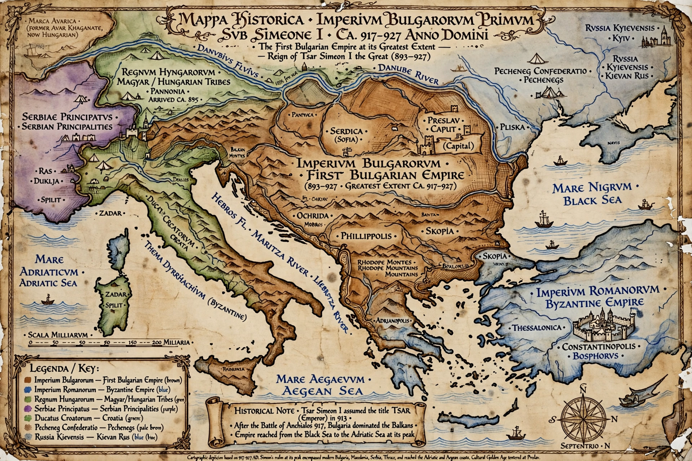

| Status | Empire |
|---|---|
| Capitals | Pliska (681–893), Preslav (893–972), Skopje, Ohrid |
| Common languages | Bulgar, Slavic, Greek; Old Church Slavonic (from 893) |
| Religion | Tengrism and Slavic paganism; Eastern Orthodox Christianity (from 864) |
| Government | Monarchy (khanate, then tsardom) |
| Established | 681 (treaty with Byzantium) |
| Disestablished | 1018 (Byzantine conquest) |
The First Bulgarian Empire (Bulgarian: Първа българска държава) was a medieval Bulgarian state that existed in Southeastern Europe between the 7th and 11th centuries. It was founded in 680–681 after the Bulgar horde of Asparuh crossed the Danube and defeated the Byzantine Empire at the Battle of Ongal, and its existence was recognized by a peace treaty in 681. Over the following centuries the empire became one of the principal rivals of Byzantium, a leading power of Slavic Europe, and the cradle of the Cyrillic script and Slavonic liturgy.
Asparuh, a son of Kubrat of Old Great Bulgaria, led his people westward after the collapse of his father's realm under Khazar pressure. Settling in the Danube delta region known as Ongal, the Bulgars allied with the local Slavic tribes (the Seven Slavic tribes and the Severi), forming a confederation in which Bulgar military leadership combined with the Slavic demographic mass. Constantine IV's campaign of 680 ended in defeat, and the 681 treaty — obliging Byzantium to pay tribute — is traditionally taken as the founding act of the Bulgarian state, with its first capital at Pliska.
Under Khan Krum (803–814) Bulgaria doubled its territory, taking Sofia (Sredets) in 809 and destroying a Byzantine army at the Battle of Pliska in July 811, where Emperor Nikephoros I was killed — Krum famously had the emperor's skull lined with silver as a drinking cup. Krum's legal code and his preparations to attack Constantinople made him the scourge of Byzantium before his sudden death in 814. His son Omurtag (814–831) concluded a 30-year peace, rebuilt Pliska in stone, and consolidated the administration; later khans extended Bulgarian rule over Belgrade, the Timok valley, and much of the central Balkans.
Khan Boris I (852–889) accepted Orthodox Christianity from Byzantium in 864/865, taking the name Michael and the title knyaz (prince). His reception of the disciples of Cyril and Methodius — Clement, Naum, and Angelarius, expelled from Moravia — in 886 laid the foundation of Slavonic letters: the schools of Ohrid and Preslav developed the Glagolitic and then the Cyrillic alphabets, and Bulgaria became the fountainhead of Slavic Christian culture.
Boris's son Simeon I the Great (893–927), educated in Constantinople, moved the capital to Preslav, made Old Church Slavonic the state and liturgical language, and waged a generation of wars against Byzantium aiming at the imperial crown itself. His victory at the Battle of Achelous in 917 was one of the bloodiest of the medieval Balkans; in 927, in the peace that followed his death, Byzantium recognized his son Peter I as emperor (tsar) and the Bulgarian archbishopric as a patriarchate. Simeon's reign is remembered as Bulgaria's Golden Age of literature and architecture.
Under Peter I (927–969) the empire was weakened by internal division, the spread of the Bogomil heresy, Magyar raids, and the rise of Kievan Rus', whose prince Sviatoslav invaded in 968–971. Emperor John I Tzimiskes then turned on his Rus' ally, stormed Preslav in 971, and deposed Tsar Boris II, annexing eastern Bulgaria. Resistance continued in the west under the Cometopuli brothers and, above all, Samuel (997–1014), who restored Bulgarian power across most of the peninsula. After Samuel's catastrophic defeat at Kleidion in 1014, the long campaigns of Basil II brought the remaining strongholds to submission, and with the surrender of the last boyars in 1018 the First Bulgarian Empire ceased to exist, its lands organized into Byzantine themes.
The empire's enduring contributions include the diffusion of the Cyrillic script and Old Church Slavonic literature to Serbia and Kievan Rus', the monumental architecture of Pliska and Preslav, and the legal and administrative model of a Christian Slavic tsardom. Bulgarian statehood was restored in 1185 with the uprising of Asen and Peter and the founding of the Second Bulgarian Empire.